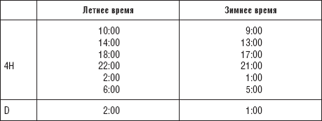

Форекс, дополнение и полезная информация
 Полезная информация
Полезная информация
Для того чтобы не было мучительно больно за бесцельно прожитые дни, необходимо составить для себя определенные правила, которые вы будете использовать как руководство к действию. Перед принятием решения о входе в сделку необходимо аргументированно ответить себе на вопросы, которые помогут разобраться в рынке и верно выставить ордер. В качестве примера приведу правила, которыми я руководствуюсь как при анализе рынка, так и при принятии решения о входе в сделку.
1. Перед началом рабочего дня нужно иметь четкий план работы.
2. Необходимость совершения торговой операции должна подтверждаться сигналом.
3. Сигнал должен формироваться по критериям плана работы.
4. Рассчитать уровень и установить стоп-лосс, просчитав рентабельность сделки.
5. Если у вас есть сомнения в правильности принимаемого торгового решения, то объясните себе объективную обоснованность этих сомнений в соответствии с вашим планом.
6. Если сомнения обоснованны, то лучше не принимать решение о покупке-продаже, а подождать. Иногда ясность понимания ситуации на рынке приходит не сразу.
7. Если вы очень сильно нервничаете, то сделки совершать не стоит. Лучше пойти домой и заняться чем-нибудь, далеким от финансовых операций.
8. Если вам приходит мысль, что вы на сто процентов уверены в направлении движения цены, подождите и тщательно обдумайте все еще раз. Часто возникает ситуация, когда все говорят: «Ежу понятно, куда цена пойдет», но именно в такие моменты цена преподносит неожиданные сюрпризы.
9. Изо всех сил старайтесь сохранять трезвый рассудок и рациональный взгляд на направление цены.
Полезная информацияВ книге часто используются термины «закрытие четырехчасовика» (Н4) и «закрытие дня» (D). Чтобы использовать эту информацию для анализа движения цен, необходимо учитывать время закрытия данных временных периодов. В таблице указано время закрытия четырехчасового периода и закрытия дневного периода. Именно после закрытия цен на выбранном вами временном периоде принимается решение как о входе в сделку, так и о выходе из сделки.

Примечания 1
Инсайдерская информация (insider information) – закрытая служебная информация компании, которая в случае ее раскрытия способна повлиять на рыночную стоимость ценных бумаг компании.
2Фолз – ложное пробитие. Именно этот термин обычно употребляется.
3Волатильность (от англ. volatility) –непостоянство, изменчивость. Волатильный рынок – это рынок, на котором наблюдаются значительные повышения и понижения цен.
4Дивергенция – расхождение между значением цены и значением индикатора.
5Тонкий, или вялый, рынок. Данный термин характеризует ситуацию неустойчивости, возникающую вследствие того, что существующие спрос и предложение не подкреплены достаточным денежным объемом.
Перед вами книга, в которой процесс торговли на рынке Forex описан простым и доступным языком. Даже самый далекий от финансовых операций человек сможет легко воспринять материал и успешно применить его на практике. Автор книги, сотрудник одной из ведущих финансовых компаний России «TeleTRADE», расскажет, как с небольшим начальным капиталом начать зарабатывать очень даже неплохие деньги на рынке Forex. При этом не имеет большого значения ваша специальность, возраст, статус и место жительства. В издании отражены все необходимые для работы моменты: открытие торгового счета, ключевые понятия и термины, основные принципы и системы торговли, процесс совершения сделок, технический анализ, а также уникальные советы и рекомендации, основанные на многолетнем опыте автора. Рекомендуется всем, кто хочет зарабатывать на рынке Forex.